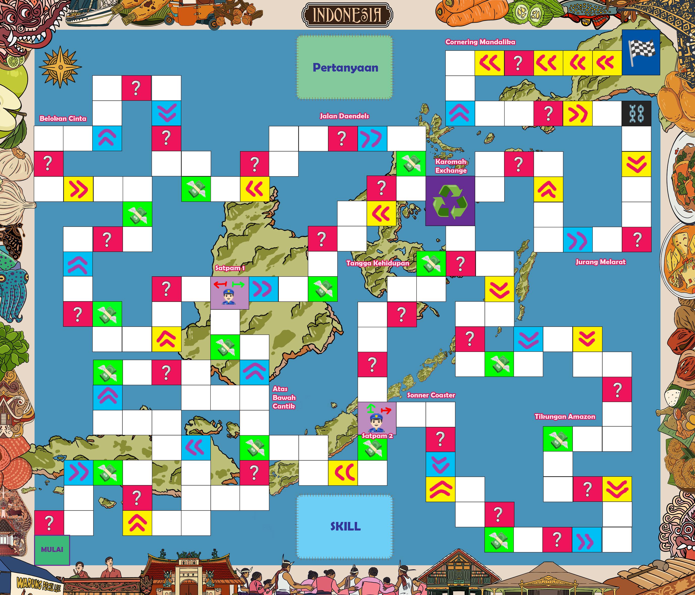

Tentang Sonopolly
Sonopolly adalah permainan papan (board game) edukatif kreasi Kelompok 4 kelas XII.F7 sebagai pemenuhan tugas Project Based Learning (PBL) semester ganjil di SMAN 1 Lemahabang, Kabupaten Cirebon.
Permainan ini mengadopsi mekanika dari beberapa permainan populer seperti Ular Tangga, Monopoly, dan Stickman Party. Pemain ditantang untuk beradu strategi melewati lintasan papan dan mencapai petak Finish lebih dulu daripada pemain lain.
Keunikan Sonopolly terletak pada integrasi Obstacle, bonus, dan elemen kuis. Terdapat puluhan kartu pertanyaan yang menguji wawasan pemain; jika berhasil dijawab, pemain akan mendapatkan "Kartu Karomah" yang dapat mengubah jalannya permainan!
Peraturan Dasar
Persiapan Permainan
- Bentangkan papan permainan di permukaan yang datar.
- Kocok dek Kartu Pertanyaan dan Kartu Karomah secara terpisah.
- Bagikan modal awal sebesar Rp 200.000 kepada setiap pemain.
- Setiap pemain memilih satu Pion/Bidak dan meletakkannya di petak Start.
- Tentukan urutan bermain dengan melempar dadu (angka tertinggi bermain duluan).
Aturan Main
- Jumlah Pemain: Maksimal 4 orang.
- Sistem Giliran: Bergilir searah jarum jam.
- Pergerakan: Lempar 1 dadu, geser bidak sesuai angka yang muncul.
- Kartu Karomah: Hanya boleh menggunakan 1 kartu per giliran.
- Kondisi Menang: Pemain pertama yang mencapai petak Finish.
Papan Permainan
Berikut adalah tampilan papan permainan Sonopolly dengan berbagai petak spesial:
Jenis-Jenis Petak
| Warna | Nama | Efek |
|---|---|---|
| Merah | Pertanyaan | Ambil kartu pertanyaan. Jika benar, dapatkan 1 Kartu Karomah. |
| Biru | Kemajuan | Maju 2 petak ke depan. |
| Kuning | Kemunduran | Mundur 2 petak ke belakang. |
| Hijau | Jackpot | Lempar dadu untuk hadiah uang (Rp 25.000 – Rp 100.000). |
| Ungu Muda | Satpam | Bayar Rp 400.000 untuk jalur singkat, atau lewat jalur memutar. |
| Ungu Pekat | Karomah Exchange | Tukar Rp 100.000 menjadi 1 Kartu Karomah. |
Kartu Karomah

Banjir Dadu
Kesempatan melempar dadu lagi setelah langkah pertama.

BANJIR DADU
Tipe: Gerakan Tambahan (Extra Move)
Efek: Kesempatan untuk melempar dadu sekali lagi.
Mekanisme
- Mainkan setelah menyelesaikan langkah pertama (termasuk efek petak tempat berhenti).
- Lempar 1 dadu kembali dan jalankan bidak sesuai angka.
- Kartu ini satu-satunya cara bergerak dua kali dalam satu giliran (tidak ada sistem double).
- Setelah digunakan, buang ke Discard Pile.
Borgol
Lewati giliran 1 pemain.

BORGOL
Tipe: Gangguan Status (Debuff/Skip)
Efek: Pilih 1 pemain lain untuk dilewat gilirannya.
Mekanisme
- Pemain aktif memilih satu pemain lawan sebagai Target.
- Target melewatkan 1 giliran berikutnya.
- Akumulasi: Bisa dipakai pada pemain yang sedang dihukum (Penjara/Stop) untuk menambah durasi.
- Penyangkalan: Efek dibatalkan jika Target memiliki Pengaman yang sudah aktif.
- Buang ke Discard Pile setelah digunakan.
Copet
Ambil Rp 50.000 dari pemain lain.

Perampok
Tipe: Serangan Ekonomi (Steal)
Efek: Pilih 1 pemain untuk mengambil uang Rp 50.000.
Mekanisme
- Pemain aktif menunjuk satu lawan.
- Lawan menyerahkan Rp 50.000.
- Kebangkrutan: Jika kurang dari Rp 50.000, serahkan semua sisa uang; tidak perlu berhutang.
- Penyangkalan: Dapat dibatalkan jika Target memiliki Pengaman yang aktif.
- Buang ke Discard Pile setelah digunakan.

Dimas Kanjeng
Gandakan 1/4 dari uang yang dimiliki.

DIMAS KANJENG
Tipe: Ekonomi/Investasi (Buff)
Efek: Menggandakan 1/4 uang yang dimiliki.
Mekanisme
- Hitung total uang tunai saat kartu dimainkan.
- Bank memberi tambahan 25% dari total tersebut.
- Contoh: Rp 100.000 → tambah Rp 25.000; Rp 200.000 → tambah Rp 50.000.
- Jika pecahan nominal tidak tersedia, dibulatkan ke bawah.
- Buang ke Discard Pile setelah digunakan.
Kerangkeng
Skip pemain urutan berikutnya.

KERANGKENG
Tipe: Gangguan Status (Debuff/Skip)
Efek: Melewati giliran pemain berikutnya.
Mekanisme
- Mainkan pada giliran Anda.
- Efek otomatis menarget pemain urutan setelah Anda.
- Target melewatkan 1 giliran.
- Bedanya dengan Borgol: Borgol memilih target bebas; Kerangkeng hanya pemain berikutnya.
- Penyangkalan: Dibatal jika target punya Pengaman aktif.
- Buang ke Discard Pile setelah digunakan.

Orang Dalam
Lewati Satpam tanpa bayar.

ORANG DALAM
Tipe: Utilitas/Bypass (Utility)
Efek: Dapat melewati penjaga tanpa membayar uang.
Mekanisme
- Mainkan saat berhenti atau melewati Petak Satpam (Ungu Muda).
- Gunakan Jalur Singkat tanpa membayar Rp 400.000.
- Catatan: Sangat berguna ketika kekurangan uang.
- Buang ke Discard Pile setelah digunakan.
Pengaman ⭐
Perlindungan 1 putaran dari gangguan.

PENGAMAN ⭐
Tipe: Pertahanan/Penangkal (Shield)
Efek: Kebal dari Kemunduran, Copet, Kerangkeng, Borgol.
Mekanisme
- Aktivasi: Hanya di awal giliran Anda, sebelum melempar dadu/aksi lain.
- Durasi: 1 putaran penuh (sampai giliran Anda kembali).
- Melindungi: Borgol (skip dibatalkan), Kerangkeng (skip dibatalkan), Copet (uang aman), Kemunduran (tidak mundur 2 petak).
- Strategi: Ingat batas 1 kartu per giliran; pilih antara bertahan atau menyerang/utilitas.
- Buang ke Discard Pile setelah durasi habis.
Transportasi
Maju 6 petak ke depan.

TRANSPORTASI
Tipe: Gerakan Maju (Advance/Movement)
Efek: Melangkah 6 petak ke arah depan pemain.
Mekanisme
- Dipakai pada giliran Anda, sebelum atau sesudah melempar dadu.
- Bidak langsung maju 6 petak menuju Finish.
- Jika melewati/berhenti di petak spesial, jalankan efeknya seperti biasa.
- Catatan: Nilai gerakan setara lemparan dadu maksimal—kuat untuk sprint menuju Finish.
- Buang ke Discard Pile setelah digunakan.

Tukar Nasib ⭐⭐
Tukar posisi dengan pemain lain. Tidak bisa ditangkal.

TUKAR NASIB ⭐⭐
Tipe: Manipulasi Posisi (Position Swap / Chaos)
Efek: Pilih satu pemain untuk bertukar posisi dengannya.
Mekanisme
- Mainkan pada giliran Anda, sebelum atau sesudah melempar dadu.
- Pilih satu pemain target.
- Bidak Anda dan target langsung bertukar posisi di papan.
- Tidak dapat dibatalkan oleh Pengaman atau perlindungan apa pun.
- Setelah pertukaran, kedua pemain tidak menjalankan efek petak mendarat (teleportasi paksa).
Prosedur Pembuatan
Prosedur Pembuatan Permainan Sonopolly
A. Bahan-Bahan
- Spanduk cetak ukuran 70 × 60 cm
- Kertas A4 100 gsm
- Bahan karet dan kardus
- Uang mainan
- Perekat (lem kertas, double tape)
B. Alat
- Canva dan Adobe Photoshop
- Yu-Gi-Oh Card Maker
- Microsoft Word
- Smartphone
- Laptop
C. Langkah-langkah Pelaksanaan
1. Desain
- Susun konsep papan
- Desain papan di Photoshop dengan ukuran 70 × 60 cm
- Desain kartu Karomah menggunakan Yu-Gi-Oh Card Maker; sesuaikan daftar kartu dan pastikan teks efek jelas
- Buat template kartu pertanyaan dan siapkan daftar soal beserta jawaban
2. Produksi Fisik
- Cetak spanduk lintasan di toko percetakan
- Cetak kartu pertanyaan dan kartu Karomah pada kertas 100 gsm
- Potong kartu secara rapi menggunakan cutter/penggaris
- Persiapkan uang mainan
- Buat bidak dari bahan kardus, rekatkan pada alas karet agar stabil
3. Uji Coba dan Revisi
- Lakukan uji coba permainan
- Catat masalah aturan, keseimbangan kartu, dan aspek fisik yang perlu diperbaiki
- Diskusikan hasil uji coba, lalu revisi desain dan peraturan
4. Dokumentasi
- Buat video demonstrasi permainan
- Ambil foto produk dan proses
Video
Trailer/penjelasan Sonopolly:
Aturan Lengkap
A. Aturan Umum
- Jumlah Pemain: Maksimal 4 orang.
- Sistem Giliran: Bergilir searah jarum jam.
- Pergerakan:
- Pada setiap giliran, pemain melempar 1 dadu.
- Geser bidak sesuai angka dadu yang didapat.
- Tidak ada sistem angka kembar (double).
- Efek Petak: Jika berhenti di petak Bonus atau Obstacle, jalankan prosedur sesuai peraturan petak tersebut.
- Kondisi Menang: Pemain pertama yang mencapai petak Finish.
B. Mekanisme Petak Papan
Papan Sonopolly memiliki warna petak dengan fungsi berbeda-beda:
Petak Merah — Pertanyaan (Quiz)
- Jika pemain berhenti di petak ini, ambil 1 Kartu Pertanyaan.
- Pemain di sebelah kanan membacakan soal.
- Jika Benar: Dapatkan 1 Kartu Karomah secara acak.
- Jika Salah: Tidak mendapatkan apa-apa.
Petak Biru — Kemajuan (Booster)
- Petak bonus maju.
- Geser bidak maju 2 petak.
Petak Kuning — Kemunduran (Setback)
- Petak penalti mundur.
- Geser bidak mundur 2 petak.
Petak Hijau — Jackpot (Hadiah Uang)
Lempar dadu untuk mengundi hadiah:
| Angka Dadu | Hadiah |
|---|---|
| 1 – 2 | Rp 25.000 |
| 3 – 5 | Rp 50.000 |
| 6 | Rp 100.000 |
Petak Ungu Muda — Satpam (Jalur Singkat)
- Petak dijaga “Satpam” untuk akses Jalur Singkat.
- Jika berhenti atau melewati petak ini:
- Bayar Rp 400.000 untuk menggunakan Jalur Singkat.
- Jika tidak bisa/tidak mau membayar, ambil Jalur Memutar.
Petak Ungu Pekat — Karomah Exchange (Penukaran)
- Tempat menukar uang menjadi Kartu Karomah.
- Jika berhenti atau melewati petak ini:
- Setiap Rp 100.000 dapat ditukar menjadi 1 Kartu Karomah.
- Penukaran opsional, tanpa batas jumlah.
C. Penggunaan Kartu Karomah
Kartu Karomah adalah kartu spesial yang memberi keuntungan strategis.
1. Aturan Dasar Penggunaan
- Waktu Penggunaan: Hanya saat giliran pemain sendiri.
- Batasan Jumlah: Maksimal 1 kartu per giliran.
- Sekali Pakai: Setelah dieksekusi, kartu dibuang ke Discard Pile.
- Pilihan Strategi: Tentukan prioritas antara kartu serangan, pertahanan, atau utilitas.
2. Cara Mendapatkan Kartu Karomah
- Menjawab Pertanyaan: Berhenti di Petak Merah dan menjawab dengan benar.
- Karomah Exchange Berhenti/melewati Petak Ungu Pekat dan menukar Rp 100.000 per kartu.
Tim Pengembang
Kelompok 4 Kelas XII.F7
SMAN 1 Lemahabang, Kabupaten Cirebon
Project Based Learning (PBL) Kelas XII Smester Gasal
| Absen | Nama |
|---|---|
| 4 | Athiyyah Hitarossy |
| 6 | Cahya Suci Dwi Rahayu |
| 12 | Hubbi Ahlal Baeti |
| 13 | Indriyana Shaleha |
| 16 | Khaerul Umam |
| 28 | Nassa Alfatar N.H. |